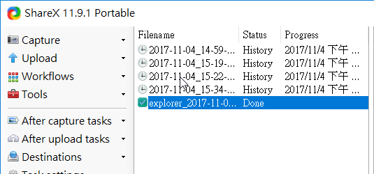
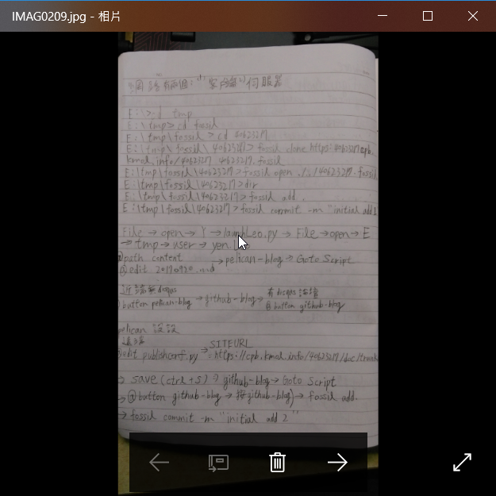

<!doctype html>
<html lang="en">
<head>
    <meta charset="utf-8">
<title>
2017 Spring 機械設計工程系網際內容管理
</title>
    <meta name="description" content="A framework for easily creating beautiful presentations using HTML">
    <meta name="author" content="Hakim El Hattab">
    
    <meta name="apple-mobile-web-app-capable" content="yes">
    <meta name="apple-mobile-web-app-status-bar-style" content="black-translucent">
    
    <meta name="viewport" content="width=device-width, initial-scale=1.0, maximum-scale=1.0, user-scalable=no">
    
    <link rel="stylesheet" href="data/reveal/reveal.css">
    <link rel="stylesheet" href="data/reveal/black.css" id="theme">
    
    <!-- Theme used for syntax highlighting of code -->
    <link rel="stylesheet" href="data/reveal/zenburn.css">

    <!-- Printing and PDF exports -->
    <script>
        var link = document.createElement( 'link' );
        link.rel = 'stylesheet';
        link.type = 'text/css';
        link.href = window.location.search.match( /print-pdf/gi ) ? 'data/reveal/pdf.css' : 'data/reveal/paper.css';
        document.getElementsByTagName( 'head' )[0].appendChild( link );
    </script>

    <!--[if lt IE 9]>
    <script src="data/reveal/html5shiv.js"></script>
    <![endif]-->
</head>

<body>
<div class="reveal">
<!-- Any section element inside of this container is displayed as a slide -->
<div class="slides">
<section data-markdown>
    <script type="text/template">
## 2017Fall CADP 與 CP

### 虎科大機械設計工程系

<small>
Created by [楊傅博](http://kmolab.github.io/blog/)
</small>

[40623217-CPb-課程網誌](blog/index.html)


    </script>
</section>


						
<section>
    <section data-markdown>
        <script type="text/template">
    # W1-W3

    * 準備筆記本、隨身碟與耳機
    * 先在近端運作,再傳至遠端,最後用fossil語言傳上網頁
    * 學會六種表達與如何培養創造力
    * 要怎麼收穫, 就那麼栽, 沒有捷徑, 真的沒有捷徑
    * 每天紀錄, 知道自己每天在幹什麼

        </script>
    </section>


    						
    <section data-markdown>
        <script type="text/template">
    # 如何啟動fossil程式

    *按下start是開始

    *按下stop是全部停止
    

        </script>
    </section>


    						
    <section data-markdown>
        <script type="text/template">
    # 遠端拉至近端

    1.先cd tmp ,接著cd fossil ,之後mkdir wd,再cd wd,最後在cd 40623217.
    (cd xx表示你進入xx的裡面資料.  mkdir xx表示你在此處建造一個名xx的資料夾).

    2.在fossil裡面要先做fossil clone的動作(EX:fossil clone https://................),可以在2個/後加上自己的學號+@ 表示綁定這個網誌必須有密碼才能進入  若沒加上學號+@就只是clone人家的資料,最後面給個黨名.fossil(EX:xx.fossil).

    3.clone完後,在進入wd內的40623217中,打上fossil open ./../../xx.fossil  表示要打開在40623217往前推到2個資料夾的位置也就是fossil資料夾的位置打開名xx.fossil.
        </script>
    </section>


    						
</section>


						
<section>
    <section data-markdown>
        <script type="text/template">
    # W4-W6

    * 新增網誌
    * 編輯內容並上傳
    * 了解eric6的概略


        </script>
    </section>


    						
    <section data-markdown>
        <script type="text/template">
    # 如何新增網誌

    1.先用Scite開啟Leo editor

    2.開啟後,打開user裡的yen.Leo

    3.之後可以新增或是維護,修改自己的網誌


        </script>
    </section>


    						
    <section data-markdown>
        <script type="text/template">
    # 如何上傳網誌

    1.先用pilcan到近端,之後用server可以讓自己在瀏覽器裡看近端內容.

    2.近端可看見後,就用github傳至遠端

    3.回到python程式,使用fossil add . ,再用fossil status檢查是否遺漏,若沒問題,即可fossil commit -m "............".


        </script>
    </section>


    						
</section>


						
<section>
    <section data-markdown>
        <script type="text/template">
    # W7-W9

    * 錄製維護網誌影片過程
    * 將錄製完的影片放置網誌內
    * python程式語言與for的迴圈的使用
    * 了解eric6如何弄出計算機架構
    * 製作出期中投影片簡報

        </script>
    </section>


    						
    <section data-markdown>
        <script type="text/template">
    ###影片錄製方法

    

    直接Shift+Prt sc就能直接start/stop
        </script>
    </section>


    						
    <section data-markdown>
        <script type="text/template">
    ###影片放入網誌內

    這是viemo的方式

    


        </script>
    </section>


    						
    <section data-markdown>
        <script type="text/template">
    ###影片放入網誌內

    這是youtube的方式

    


        </script>
    </section>


    						
    <section data-markdown>
        <script type="text/template">
    ###python程式語言與for的迴圈使用

    

    如筆記所示
        </script>
    </section>


    						
    <section data-markdown>
        <script type="text/template">
    ###如何操作eric6的架構

    

    從旁邊行列有push button可拉近框格內,對框格內右鍵"Lay out"
    之後就會排版順序.
        </script>
    </section>


    						
</section>


						
<section>
    <section data-markdown>
        <script type="text/template">
    ###筆記內容

    

        </script>
    </section>


    						
    <section data-markdown>
        <script type="text/template">
    
        </script>
    </section>


    						
    <section data-markdown>
        <script type="text/template">
    


        </script>
    </section>


    						
    <section data-markdown>
        <script type="text/template">
    

        </script>
    </section>


    						
    <section data-markdown>
        <script type="text/template">
    
        </script>
    </section>


    						
</section>


						
<section>
    <section data-markdown>
        <script type="text/template">
    # 自評成績

    # 70

        </script>
    </section>


    						
</section>


						
</div>

</div>

<script src="data/reveal/head.min.js"></script>
<script src="data/reveal/reveal.js"></script>
<script>
        // More info https://github.com/hakimel/reveal.js#configuration
        Reveal.initialize({
            controls: true,
            progress: true,
            history: true,
            center: true,

            transition: 'slide', // none/fade/slide/convex/concave/zoom

            // More info https://github.com/hakimel/reveal.js#dependencies
            dependencies: [
                { src: 'data/reveal/classList.js', condition: function() { return !document.body.classList; } },
                { src: 'data/reveal/marked.js', condition: function() { return !!document.querySelector( '[data-markdown]' ); } },
                { src: 'data/reveal/markdown.js', condition: function() { return !!document.querySelector( '[data-markdown]' ); } },
                { src: 'data/reveal/highlight.js', async: true, callback: function() { hljs.initHighlightingOnLoad(); } },
                { src: 'data/reveal/zoom.js', async: true },
                { src: 'data/reveal/notes.js', async: true },
                { src: 'data/reveal/math.js', async: true }
            ]
        });
</script>
</body>
</html>

